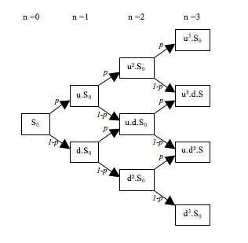

import sys
sys.path.append('../cpp_pricing/build')
import pricer
import numpy as np
from IPython.display import display, HTMLBinomial Tree and Black-Scholes-Merton Overview and Implementation
CPP Pricing Engine
Alejandro Naranjo Caraza
2026-03-01
Overview
The binomial and Black-Scholes-Merton (BSM) models are two fundamental option valuation frameworks. Each has its own advantages and disadvantages. The BSM model has an exact analytic solution for option price and, consequently, can be implemented with exceedingly low runtime (O(1)). However, the model does not provide acces to the underlying stock price or option price in the time periods before option maturity. This is especially problematic when working with american options with dividend paying unerlying stock. The binomial model has much greater runtime (O(n²)), but calculations are done on a priod-by-perdiod basis, allowing access to the internal dynamics of the process. For this reason, the binomial model is often preferred when working with complex stock payoff structures.
Both models operate under the following assumptions:
- No-arbitrage: No risk-free profit is possible.
- Constant risk-free rates: The market’s risk-free rate r ramains constant during the option’s life.
- Constant volatility: Underlying asset volatility \sigma remains constant throughout the life of the option.
- Short selling of securities with full use of proceeds is permitted.
- No transaction costs or taxes
This document describes the general framework behind the binomial and Black-Scholes-Merton option pricing models. Both models are implemented within the custom C++ option pricing library. A few examples of the library’s usage in Python are aslo provided.
Notation
The following notation is used throughout this document:
- K: Option strike price
- T: Option maturity
- f: Option value
- S_0: Initial (current) stock price
- S_t: Stock price at time t
- u: Growth factor when stock price moves up
- d: Decrease factor when stock price moves down
- dt: Continuous time sift
- \Delta t: Discrete time shift
Related Material
- Additional test cases (in Python) for the custom implementation of C++ pricing library can be found in insert link
- Black-Scholes-Merton pricing implementation can be found in insert link
- Binomial pricing implementation can be found in insert link
- The underlying assumptions regarding stock price behaviour can be found in insert link
Load Libraries
A Note on Option Payoffs
An option is a contract which conveys its holder the right, but not the obligation, to buy or sell a specific quantity of a given asset or instrument. A european option can only be exercised at maturity, meaning the transaction of the underlying asset can occur only at a previously agreed upon time. An american option can be exercised at any time during the life of the option: the transaction can occur before or at maturity. A call option gives the holder the right to buy, while a put option give the holder the right to sell.
Pyoff from a long position in a call option is \max(S_0-K,0) Payoff from a long position in a put option is \max(K-S_0,0) Where t=T for a European option and t<T for an american option.
Binomial Model
General Overview of Option Valuation
The binomial model for option valuation proposes a multiplicative random walk as a model for stock price behaviour (see insert link). This method was proposed by Cox, Ross and Rubinstein in 1979. The model converges to the Black-Scholes-Merton model as time steps become smaller.
Under this model, the stock price at time t+\Delta t is
S_{t+\Delta t} = \begin{cases} u S_t & \text{with probability } p, \quad (u > 1) \\ d S_t & \text{with probability } 1-p, \quad (d < 1) \end{cases}
That is, if the stock moves up, its value becomes S_u = u S_t, and if it moves down, its value becomes S_d = d S_t.
An option with underlying stock price S_t is considered. The option’s payoff if the stock moves to S_u is f_u. If the stock moves to S_d, the payoff is f_d. An investor can construct a riskless portfolio consisting of a long position in \Delta shares of stock and a short position in one option.
The value of the portfolio at time t+\Delta t is
\begin{align*} \Delta S_t u - f_u & \quad \text{if the stock price moves up} \\ \Delta S_t d - f_d & \quad \text{if the stock price moves down} \end{align*}
The cost of setting up the portfolio at time t is \Delta S_t - f
Notice that the following conditions hold:
- The portfolio is riskless if
\Delta S_t u - f_u = \Delta S_t d - f_d \Delta = \frac{f_u - f_d} {S_t (u - d)}
- The current cost of setting up the portfolio is equal to the present value of the portfolio at time t+\Delta t if
where p = \dfrac{a - d}{u - d} is the risk-neutral probability, a = e^{r \Delta t} is the risk-free growth factor, \Delta t is the length of each time step, and r is the risk-free interest rate.
Interpretation of the Risk-Neutral Probability
The probability p used in the binomial pricing formula is called the risk-neutral probability. It does not represent the real-world probability that the stock price will move up.
Instead, this probability arises from the requirement that arbitrage opportunities must not exist. Because it is possible to construct a hedged portfolio consisting of the stock and the option that eliminates risk, the return on this portfolio must equal the risk-free rate. This condition uniquely determines the risk-neutral probability.
As a result, the option price can be interpreted as the discounted expected payoff computed using the risk-neutral probability. This does not imply that investors are risk-neutral in reality; rather, prices behave as if investors were risk-neutral because arbitrage prevents any alternative pricing.
Example of a Binomial Tree

Pricing Algorithm Overview
From the equations derived above, the option price at time t=t_0 (present value) can be calculated by constructing a binomial tree with backward induction:
- First, calculate the stock prices and option payoffs at the final nodes, that is, at maturity (t=T).
- Move backwards through the tree. Consider the nodes at t = T - \Delta t and calculate the option value using
f = e^{-r \Delta t} (p f_u + (1-p) f_d) - Continue moving backwards through the binomial tree until reaching the node at t=0.
Binomial Pricing Model for American Options
American options can be exercised at any time prior to maturity T. Consequently, when working backwards through the binomial tree, the continuation value at each node is compared with the intrinsic value from immediate exercise. The option value f at each node is the maximum of these two quantities.
Binomial Pricing with Continuous Dividend Yield
For a stock paying a continuous dividend yield q, the expected growth rate under the risk-neutral measure is r - q. Accordingly, the expected growth factor per time step is a = e^{(r - q)\Delta t}. This adjustment must be incorporated into the binomial pricing model, particularly when computing the risk-neutral probability.
Binomial Pricing with Known Discrete Dividend Cash Schedule
When an option’s underlying stock has a known discrete dividend cash schedule, subtracting the dollar amount from the stock’s value at each node at or after the ex-dividend dates results in a non-recombining tree (see insert link).
An alternative method is to separate the stock price S_t into an uncertain component S_t^* (used to model the random walk) and a certain component (the present value of future dividends paid during the life of the option).
For a stock with a single dividend payment D and ex-dividend date \tau, S^* is given by
S^* = \begin{cases} S & \text{when } i\Delta t > \tau \\[6pt] S - D e^{-r(\tau - i\Delta t)} & \text{when } i\Delta t \le \tau \end{cases}
For a set of dividend payments \{D_j : j = 1,2,\ldots,k\} and corresponding ex-dividend dates \{\tau_j : j = 1,2,\ldots,k\}:
S^* = S - \sum_{j:\,\tau_j \ge i\Delta t} D_j e^{-r(\tau_j - i\Delta t)}
Using \sigma^*, the volatility of S_t^*, a recombining tree that models S_t^* can be constructed as before. Adding the corresponding known component at each node results in a tree for S_t, and option valuation can then be carried out as before.
Note: \sigma^* = \sigma is sometimes used for model simplicity, while \sigma^* = \sigma\dfrac{S}{S^*} is a more accurate approximation.
Implementation of Binomial Model in C++
A custom implementation of the binomial model in C++ can be found in insert link. The library supports European and American put and call options, with or without a stock dividend yield, and also accepts a known cash dividend schedule for the underlying stock. Stock objects, option objects, and models are implemented as separate components.
The following shows an example use case of the library’s binomial pricer in Python.
# Define option parameters
T = 1# Maturity
K = 100#Strike price
optType = 'c'# Option type (call/put)
exeType = 'e'# Exercise type (european/american)
S0 = 100# Start stock price
r = 0.05# Risk-free rate
q = 0.05# Dividend yield
sigma = 0.2# Stock volatility
divCash = [
[1/12, 1],
[3/12, 0.5],
[9/12, 0.3]
]# Dividend cash schedule
# Build option object
vanillaOption = pricer.makeVanillaOption(K,T,optType,exeType)
# Build stock object
stock = pricer.makeStock(S0,0.0)# Stock with no dividends
stockWithYield = pricer.makeStock(S0,q)# Stock with continuous dividend yield
stockWithDivCash = pricer.makeStock(S0,0.0,divCash)# Stock with dividend cash schedule
# Build binomial models
binomial = pricer.makeBinomial(vanillaOption,stock,r,sigma)
binomialWithYield = pricer.makeBinomial(vanillaOption,stockWithYield,r,sigma)
binomialWithDivCash = pricer.makeBinomial(vanillaOption,stockWithDivCash,r,sigma)
# Get price through binomial tree
print("Price - Underlying Stock with No Dividends")
print(round(binomial.getPrice(),2),'\n')
print("Price - Underlying Stock with Continuous Yield")
print(round(binomialWithYield.getPrice(),2),'\n')
print("Price - Underlying Stock with Dividend Cash Schedule")
print(round(binomialWithDivCash.getPrice(),2),'\n')Price - Underlying Stock with No Dividends
10.43
Price - Underlying Stock with Continuous Yield
7.56
Price - Underlying Stock with Dividend Cash Schedule
9.37
Black-Scholes-Merton
From insert link, the Black-Scholes-Merton (BSM) assumes stock price follows a Geometric Brownian Motion:
dS = \mu S dt + \sigma S dz
If f is the price of an option contingent on S, if it must be some function of S and t: f=f(S,t).
From Ito’s lemma (see insert link)
df = (\dfrac{\partial f}{\partial S}\mu S + \dfrac{\partial f}{\partial t} + \dfrac{1}{2} \dfrac{\partial² f}{\partial S²}\sigma²S²)dt + \dfrac{\partial f}{\partial S} \sigma S dz
Notice that the Winer process underlying f and S is the same. This means that a portfolio of the stock and the option can be constructed in such a way that the process is eliminated, therefore eliminating risk.
Taking a short position in one option and a long position in \dfrac{\partial f}{\partial S} shares results in a portfolio of value
\Pi = -f + \dfrac{\partial f}{\partial S}S
Notice the following is true:
d\Pi = -df + \dfrac{\partial f}{\partial S}dS + S d(\dfrac{\partial f}{\partial S})
Since \dfrac{\partial f}{\partial S} is held constant over dt:
d\Pi = -df + \dfrac{\partial f}{\partial S}dS
Substituting in the previous equations:
d\Pi = (-\dfrac{\partial f}{\partial t} - \dfrac{1}{2}\dfrac{\partial² f}{\partial S²}\sigma² S²)dt
Under no riskless arbitrage opportunities:
d\Pi = r \Pi dt (\dfrac{\partial f}{\partial t} + \dfrac{1}{2}\dfrac{\partial² f}{\partial S²}\sigma² S²)dt = r(f - \dfrac{\partial f}{\partial S}S)dt \dfrac{\partial f}{\partial t} + rS\dfrac{\partial f}{\partial S} + \dfrac{1}{2}\sigma²S²\dfrac{\partial² f}{\partial S²} = rf
is the Black-Scholes-Merton differential equation.
The equation has the following analytic solution (see insert link):
\begin{align*} c &= S_0 N(d_1) - K e^{-rT} N(d_2) \\ p &= K e^{-rT} N(-d_2) - S_0 N(-d_1) \end{align*}
with
\begin{align*} d_1 &= \dfrac{\ln(S_0/K) + \left(r + \frac{\sigma^2}{2}\right)T} {\sigma \sqrt{T}} \\ d_2 &= \dfrac{\ln(S_0/K) + \left(r - \frac{\sigma^2}{2}\right)T} {\sigma \sqrt{T}} = d_1 - \sigma \sqrt{T} \end{align*}
where
- c is the call option’s price
- p is a put option’s price
- N(.) is the cumulative distribution function of a standard normal random variable.
Implementation Details
Since the Black–Scholes–Merton (BSM) differential equation admits a closed-form analytic solution under standard model assumptions, implementation of the model for option valuation reduces to a direct calculation given the required input variables.
BSM Pricing Model for American Options
Notice that BSM’s closed form solution assumes exercise at maturity T. Methods for taking into account early exercise have been proposed, but are generally discarded in favour of other modeling methods.
However, american call options with no dividends should never be exercised early, in which case, BSM does yield the correct price. In general,
- American call with dividends -> can be exercised early (BSM not optimal)
- American call without dividends -> should not be exercised early (BSM works)
- American put with dividends -> can be exercised early (BSM not optimal)
- American put without dividends -> can be exercised early (BSM not optimal)
Note that, in the case of american put options with dividends, BSM does yield a lower bound: P_{American} \geq P_{European}
BSM Pricing Model with Continuous Dividend Yield
In similar fashion to the binomial model, under the risk-neutral measure, a stock paying a continuous dividend yield q has expected growth rate r − q.
This results in the following stochastic differential equation:
dS_t = (r - q) S_t \, dt + \sigma S_t \, dW_t
With this adjustment, the solution yields:
\begin{align*} c &= S_0 e^{-qT} N(d_1) - K e^{-rT} N(d_2) \\ p &= K e^{-rT} N(-d_2) - S_0 e^{-qT} N(-d_1) \end{align*}
with
\begin{align*} d_1 &= \dfrac{\ln(S_0/K) + \left(r - q + \frac{\sigma^2}{2}\right)T} {\sigma \sqrt{T}} \\ d_2 &= \dfrac{\ln(S_0/K) + \left(r - q - \frac{\sigma^2}{2}\right)T} {\sigma \sqrt{T}} = d_1 - \sigma \sqrt{T} \end{align*}
BSM Pricing Model with Known Dividend Cash Schedule
The method for taking into account a known dividend cash schedule in the Black–Scholes–Merton model is similar to that used in the binomial model: the stock price is separated into a risky component S^* and a deterministic component.
Recall
S^* = S - \sum_{j:\,\tau_j \ge i\Delta t} D_j e^{-r(\tau_j - i\Delta t)}
However, since the Black–Scholes–Merton model yields a closed-form solution and S_T^* = S_T (the stock price at maturity), one can simply compute S_0^*, the risky component at t=0, with \sigma^*, the volatility of S^*, and substitute these into the Black–Scholes–Merton formula.
Implementation of Black-Scholes-Merton Model in C++
A custom implementation of the BSM model in C++ can be found in insert link. The BSM model only supports American put and call options, with or without a stock dividend yield. It does not support known cash dividend schedules for the underlying stock. Stock objects, option objects, and models are implemented as separate components.
The following shows an example use case of the library’s BSM pricer in Python. Notice that the prices obtained through BSM are close to those obtained through the binomial model.
T = 1
K = 100
optType = 'c'
exeType = 'e'
S0 = 100
r = 0.05
q = 0.05
sigma = 0.2
# Build option object
vanillaOption = pricer.makeVanillaOption(K,T,optType,exeType)
# Build stock object
stock = pricer.makeStock(S0,0.0)# Stock with no dividends
stockWithYield = pricer.makeStock(S0,q)# Stock with continuous dividend yield
# Build BSM models
bsm = pricer.makeBSM(vanillaOption,stock,r,sigma)
bsmWithYield = pricer.makeBSM(vanillaOption,stockWithYield,r,sigma)
# Get price through binomial tree
print("Price - Underlying Stock with No Dividends")
print(round(bsm.getPrice(),2),'\n')
print("Price - Underlying Stock with Continuous Yield")
print(round(bsmWithYield.getPrice(),2),'\n')Price - Underlying Stock with No Dividends
10.45
Price - Underlying Stock with Continuous Yield
7.58
Put-Call Parity for European Options
Under the assumptions stated above, put-call parity must be satisfied: a portfolio of a long position in a european call and a short position in a european put should be equivalent and the same value as a single forward contract at the same maturity T and strike price K. If, at maturity, the stock price is larger than than the strike price, the call option will be exercised; if maturity is larger, the put will be exercised. In both cases, this results in the transaction of one unit of the asset for K, same as in a forward contract.
As such, this means that the following equation must be satisfied:
C - P = S_0 - K e^{-rT}
or, if the underlying stock has a continuous dividend yield q:
C - P = S_0 e^{-qT} - K e^{-rT}
The following code verifies put-call parity for an option with maturity T = 1 year, strike price K = 100, underlying stock price S_0 = 100, risk-free rate r = 5\%, and stock volatility \sigma = 20\%.
T = 1
K = 100
S0 = 100
r = 0.05
q = 0.01
sigma = 0.2
# Build option objects
callOpt = pricer.makeVanillaOption(K,T,'c','e')# Call option
putOpt = pricer.makeVanillaOption(K,T,'p','e')# Put option
# Build stock object
stock = pricer.makeStock(S0,q)# Stock with continuous dividend yield
# Build BSM models
bsmCall = pricer.makeBSM(callOpt,stock,r,sigma)# BSM with call option
bsmPut = pricer.makeBSM(putOpt,stock,r,sigma)#BSM with put option
# Get price
callPrice = bsmCall.getPrice()
putPrice = bsmPut.getPrice()
print('Call - Put : ',round(callPrice - putPrice,2))
print('Forward Price: ',round(S0 * np.exp(-q*T) - K * np.exp(-r*T),2))Call - Put : 3.88
Forward Price: 3.88